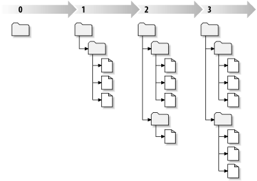

安装apache，参见Archlinux Wiki LAMP: LAMP
安装apache-subversion模块，参见Archlinux Wiki Subversion Setup: Subversion Setup
安装指令：pacman -S subversion
推荐TortoiseSVN，安装后自动集成到Windows资源管理器 Explorer。
Subversion 使用集中的数据库，它包含了所有的版本控制文件及其完整历史。这个数据库就是版本库。版本库通常位于运行 Subversion 服务器的文件服务器上，向 Subversion 客户端(例如 TortoiseSVN)提供需要的数据。如果只备份一个东西，请备份版本库，因为它是你数据的主副本。
这是实际工作的地方。每一个开发者在自己的电脑上都有属于自己的工作副本，有时可以将其理解为沙箱。你可以将最新的版本从版本库上取下来，在本地的副本上工作而不影响其他人，如果对更改满意就可以将其提交到版本库中。
Subversion 工作副本不包含项目的历史， 但是它保存了你修改前的本件的副本，就像这些文件在版本库中的状态一样。这意味着你可以轻而易举的准确检查出都做了哪些改动。
svn commit 操作可以作为一个原子事务操作发布任意数量文件和目录的修改。在你的工作副本中，你可以改变文件内容，创建、删除、改名和复制文件和目录，然后作为一个整体提交。
在版本库中，每次提交被当作一次原子事务操作: 要么所有的改变发生，要么都不发生，Subversion 努力保持原子性以应对程序错误、系统错误、网络问题和其他用户行为。
每当版本库接受了一个提交，文件系统进入了一个新的状态，叫做版本，每个版本被赋予一个独一无二的自然数，一个比一个大，初始修订号是 0，只创建了一个空目录，没有任何内容。
可以形象的把版本库看作一系列树，想象有一组版本号，从 0 开始，从左到右，每一个修订号有一个目录树挂在它下面，每一个树好像是一次提交后的版本库“快照”。
[1] Subversion 基本概念：http://tortoisesvn.net/docs/release/TortoiseSVN_zh_CN/tsvn-qs-basics.html
[2] 修订版本：http://tortoisesvn.net/docs/release/TortoiseSVN_zh_CN/tsvn-basics-svn.html#tsvn-basics-svn-revisions
TortoiseSVN官方文档TortoiseSVN
SVN命令参考（svn command reference）SVN命令参考
返回主页文档主页